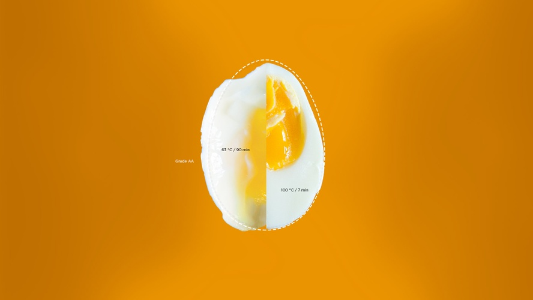

Predictive Modeling of Noiler Chicken Egg Weight Using Regression Analysis
Project Overview
This project aimed to predict the egg weight of Noiler chickens using external egg parameters (egg length, width, etc.) through regression analysis. The goal was to assist poultry farmers in optimizing breeding processes.
Tools & Technologies
I used SAS for running multiple linear regression models and Excel for data cleaning and management. Visualizations were created using Python’s matplotlib library.
Methodology
After conducting exploratory data analysis, I applied multiple linear regression models to predict egg weight based on shell surface area and other parameters. The model was evaluated using R², achieving a value of 0.9996.
Results & Interpretation
The model showed that shell surface area was the strongest predictor of egg weight, with an R² value of 0.9996. This insight can help farmers optimize breeding by focusing on external egg quality traits.
sodiqadekunle54321@gmail.com